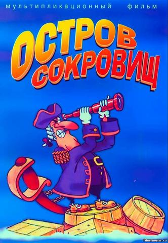
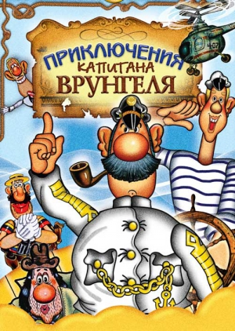
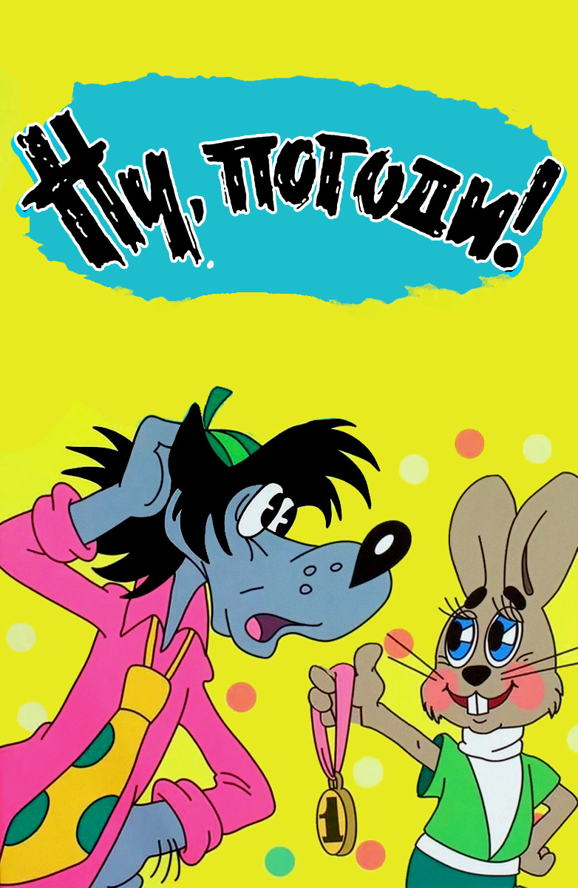
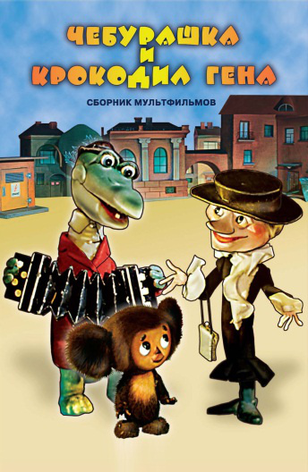

Советский полнометражный мультипликационно-игровой телефильм, созданный по заказу Гостелерадио СССР на студии «Киевнаучфильм» режиссёром Давидом Черкасским по одноимённому роману Роберта Льюиса Стивенсона.

Советский мультсериал режиссёра Давида Черкасского, снятый по мотивам одноимённой повести Андрея Некрасова. Мультфильм создан на киностудии «Киевнаучфильм» с использованием техник перекладки, рисованной мультипликации и реальных кинокадров. На каждую серию было сделано более 16 тысяч рисунков («перекладок»).

Культовый советский и российский мультсериал. Пилотный выпуск мультсериала был снят в 1969 году режиссёром Геннадием Сокольским, в том же году вышел первый выпуск основного мультсериала. В основе сюжета лежит постоянно оканчивающаяся неудачей погоня Волка за Зайцем в надежде его съесть. В итоге Заяц всегда оказывается невредим, а Волк говорит или кричит ему: «Ну, Заяц, погоди!».

Кукольный мультипликационный фильм, поставленный Романом Качановым по мотивам книги Эдуарда Успенского «Крокодил Гена и его друзья» и выпущенный киностудией «Союзмультфильм» 31 декабря 1969 года. В этом фильме впервые появились широко известные мультипликационные образы — Крокодил Гена, Чебурашка и старуха Шапокляк.